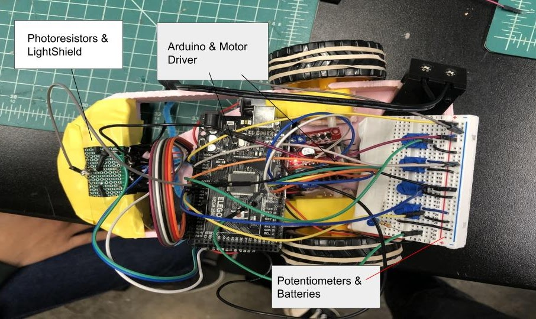
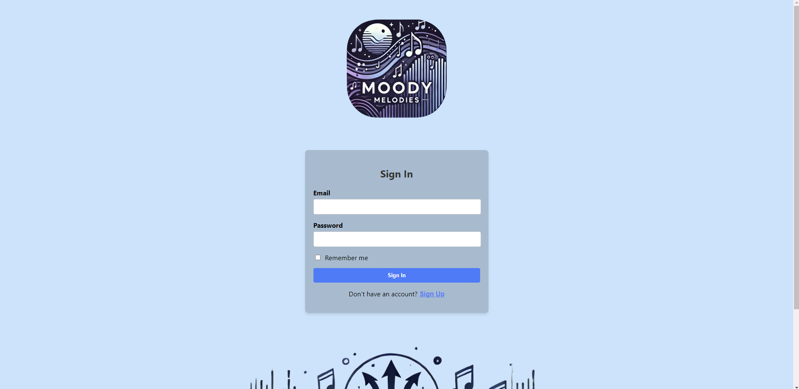
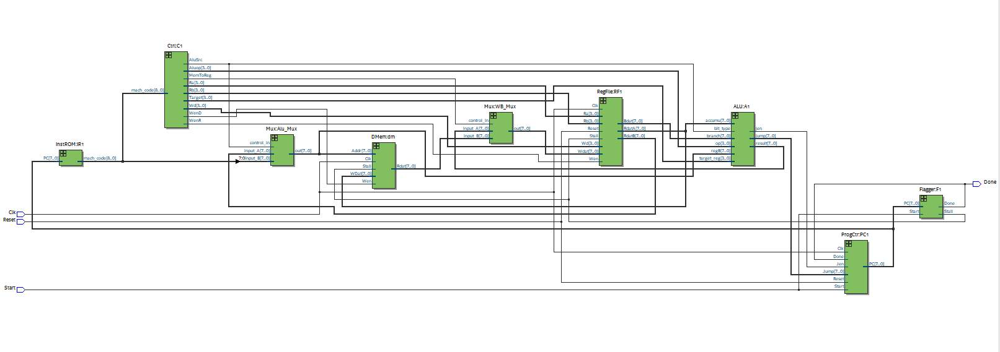

Projects/Experience
I started in RPL my freshman year in the New Member Project, where we worked in teams of 3 to 5 to design and manufacture a smaller-scale rocket to introduce newer members to rocketry. I worked in a team of 5 and acted as our sort of leader, communicating with the chief engineer in charge of all the NMP teams, and deciding what to do. Throughout this project, I learned the basics of SOLIDWORKS, 3D printing, and overall rocketry design on a smaller scale. I made technical contributions to our recovery methods and our avionics bay. I designed and printed a cylinderical bay that would hold a 9V battery, Arduino nano, an altimeter, and a microSD card reader to collect simple data during flight.
Starting my second year, I worked on Hermes, a sugar-propellant rocket. I spent a lot of my second year being onboarded, reviewing, and changing design choices for our Avionics bay which consists of 3 main systems: recovery, data, and video. While the design for the Avionics bay was mostly finished, it wasn't tested yet, so I 3D printed designs and ordered parts to start physically putting everything together, working with another engineer to do this. I made contributions to our data system and helped prototype it on Arduino with a breadboard before moving it onto a PCB. Besides any technical contributions I've made to the avionics system on Hermes, I also serve as our team's Safety Officer to ensure athat ny manufacturing processes are being done properly.
This was the project I finished at the end of my first engineering class during my freshman year. I worked in a team of four to create a line following robot that would be tested in terms of speed and accuracy through 3 different tracks. My team was able to achieve the most loops in one of the tracks to show that our project had both solid speed and accuracy. All the teams were given the same starting materials. In my team, I made contributions to the CAD design using onShape. I improved upon it by adding more storage space towards the back and adding a shield at the front to prevent light from affecting the photoresistors. I also made contributions to the soldering of our light shield.
This was a 2-month project done in a team of 7, where we aimed to design and produce a webapp that would recommend music to other students based on their moods to help reduce the stress of college life with specific music that could help them relax or manage their emotions better. I made contributions during the design phase, helping the team decide what features we should implement and how we would do them. I also made major contributions on the front-end side of the webapp using HTML, CSS, and some React.
A research project I was part of for about a year. I joined in Fall 2024, working on the Radio Telemetry Tracking Project. This research program works with various local organizations, like the San Diego Zoo to create and research new technologies or methods to help them in the field. I worked on CAD design using Solidworks and updated the previous payload for our drone, which carried various electrical parts to help transmit the locations of wildlife to a ground station. I also managed the wiring and physical hardware of the payload.

A computer architecture project designed over 10 weeks, consisting of a specialized custom RISC processor made to successfully run 3 given programs. This was done in collaboration with a partner, and involved extensive planning of the ISA and hardware design of our processor based on MIPS to fit the constraints given to us. Our machine had certain limitations such as a program counter limited to 8 bits, 16 registers, 8-bit data paths, 9-bit instructions, and an overall simplified instruction set. The repo is private due to course policy, but a readme file is provided.
